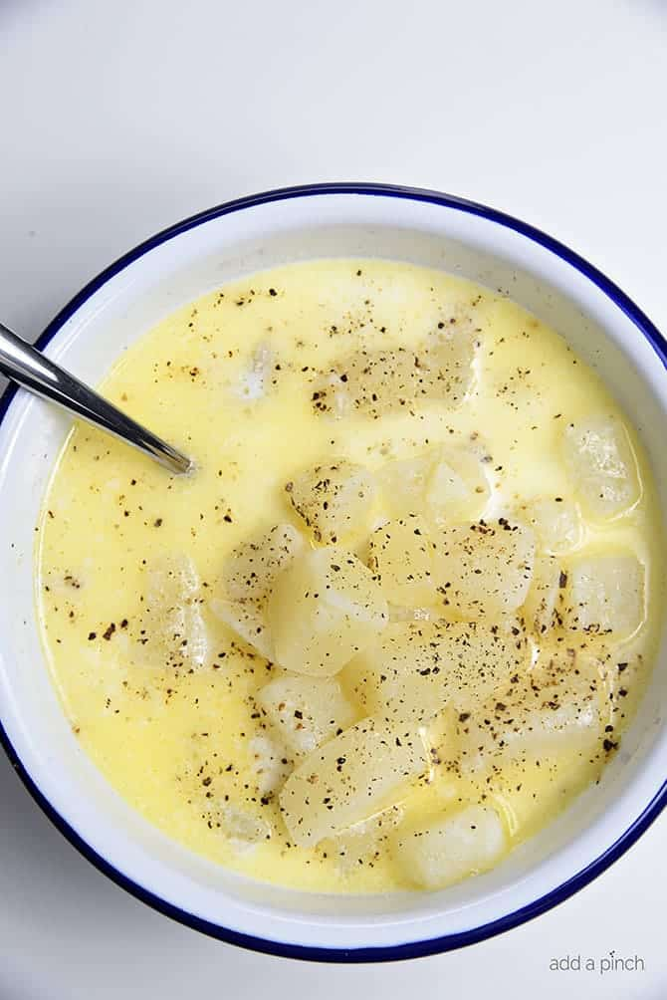

Potato soup

Description
Potato soup is a very easy healthy, cheap and quick dish to cook.
The main ingredient and taste is of course potatoes.
Ingredients
- Potatoes
- Water
- Milk
- Butter
- Salt
- Pepper
Steps
- Prepare the potatoes
- Cook the potatoes for about 20 minutes
- Add milk and butter and cook for another 5-10 minutes
- Add salt and pepper when you're finished